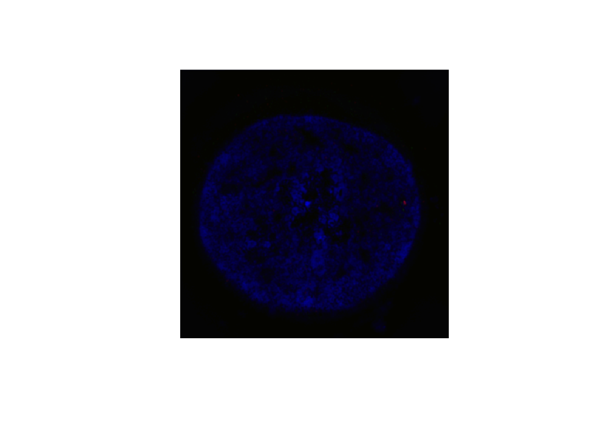

Read, write and plot TIFFs
Volker J. Schmid, Bioimaging group, Department of Statistics, LMU Munich
2020-02-11
readwriteplot.Rmd## Bioimagetools 1.1.4Read and write 3D RGB tiff stacks
readTIF() and writeTIF() read and write tiff stacks.
3D and color stacks are automatically recognized by readTIF(), if the meta information is correct. Available meta information is saved as attributes. readTIF() can also handle URLs. The function returns an array with range 0 to 1.
cell <- bioimagetools::readTIF("http://ex.volkerschmid.de/cell.tif")
## Warning in tiff::readTIFF(file, all = TRUE, info = TRUE, as.is = as.is, :
## TIFFReadDirectory: Unknown field with tag 50838 (0xc696) encountered
## Warning in tiff::readTIFF(file, all = TRUE, info = TRUE, as.is = as.is, :
## TIFFReadDirectory: Unknown field with tag 50839 (0xc697) encountered
print(dim(cell))
## [1] 512 512 3 52
print(attributes(cell)$dim)
## [1] 512 512 3 52
print(attributes(cell)$bits.per.sample)
## [1] 16
par(pty="s")
bioimagetools::img(cell, z=25 ,col="rgb")
writeTIF() writes out tiff stacks. Meta information in attributes are saved. The bits per sample can be controlled by an option.
readClassTIF() is a special version of readTIF() for images with a very low number of intensity values, e.g. masks or segmented images.
bioimagetools::writeTIF(2*EBImage::thresh(cell[,,1,])+EBImage::thresh(cell[,,2,]), file="simple.tif")
## [1] 52
mysimple <- readClassTIF("simple.tif", n=3)
par(pty="s")
bioimagetools::img(mysimple[,,25],col="red",up=3)
## Warning in file.remove("my_cell.tif"): kann Datei 'my_cell.tif' nicht löschen.
## Grund 'No such file or directory'## [1] FALSE## Warning in file.remove("simple.tif"): kann Datei 'simple.tif' nicht löschen.
## Grund 'No such file or directory'## [1] FALSE